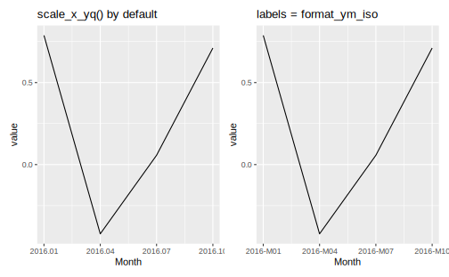
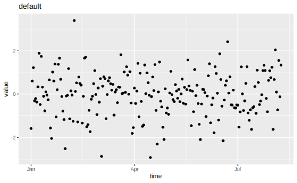
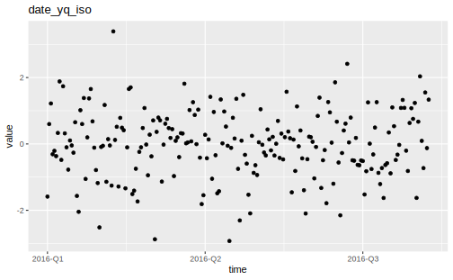
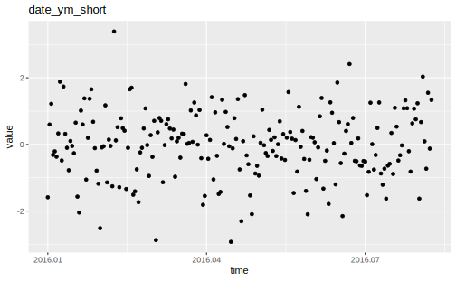

4.5 dint
While lubridate can handle date & time data in an effective manner, currently it requires the largest unit of a date to be days. This means it does not cover functionality for working with year-quarter, year-month and year-isoweek dates.
In contrast, dint provides a toolkit for these 3 types of date. It stores them in an easily human readable integer format, e.q 20141 for the first quarter of 2014 and so forth. Additionally, it goes hand in hand with lubridate in more ways than one. dint is implemented in base R and comes with zero external dependencies. Even if you don’t work with such special dates directly, dint can still help you at formatting dates, labelling plot axes, or getting first / last days of calendar periods (quarters, months, isoweeks).
dint provides 4 different S3 classes that inherit from date_xx (a superclass for package development purpose).
date_yq()for year-quarter datesdate_ymfor year-month datesdate_ywfor year-isoweek datesdate_y()for storing years. This is for development purpose, and does not provide notable advantage over storing year as integers.
4.5.1 Creation
date_xx vectors can be created using explicit constructors
date_yq(2015, 1)
#> [1] "2015-Q1"
# vectorized
date_ym(c(2015, 2016), c(1, 2))
#> [1] "2015-M01" "2016-M02"
date_yw(c(2008, 2009), 1)
#> [1] "2008-W01" "2009-W01"It is worth mentioning that tsibble also provides similar functions like yearquarter(), yearmonth() and yearweek(). But I think they are generally not flexible in this use case.
as_date_xx coerce other classes (mainly Date, POSIXct(time) and integer) into date_xx objects
4.5.2 Arithmetic and Sequences
All date_xx support addition, subtraction and sequence generation.
4.5.3 Accessors
We can access components of date_xx (e.g the quarter of a date_yq) with accessor functions. You can also use these functions to convert between date_xx vectors.
Accessor functions in dint are compatible with Date, POSIXct classes, so are year(), month() and day() in lubridate with date_xx classes.
# dint accessor functions on other classes
get_quarter(Sys.Date())
#> [1] 2
get_month(ymd(20200303))
#> [1] 3
get_isoweek(Sys.time())
#> [1] 18
# lubridate accessor functions on date_xx classes
year(q)
#> [1] 2014
quarter(q) # default to first month in 4th quarter
#> [1] 4
month(q)
#> [1] 10
day(q) # default to 1st day in that month
#> [1] 1first_of_xx, last_of_xx are 2 helper functions to access the first or last day within a specifit span from a date_xx, Date and POSIX object.
q <- date_yq(2015, 1)
# the same as as.Date(q), but more explicit
first_of_quarter(q)
#> [1] "2015-01-01"
last_of_quarter(q)
#> [1] "2015-03-31"
d <- ymd("20200303")
# first locate the date in a isoweek, then find the first day in that isoweek
first_of_isoweek(d)
#> [1] "2020-03-02"
last_of_month(d)
#> [1] "2020-03-31"4.5.4 Formatting
Formatting date_xx vectors is easy and uses a subset of the placeholders of base::strptime()(plus %q for quarters)
q <- date_yq(2014, 4)
format(q, "%Y Q%q")
#> [1] "2014 Q4"
format(q, "%Y.%q")
#> [1] "2014.4"
format(q, "%y.%q")
#> [1] "14.4"
m <- date_ym(2014, 12)
format(m, "%Y-M%m")
#> [1] "2014-M12"
w <- date_yw(2014, 1)
format(w, "%Y-W%V")
#> [1] "2014-W01"There are some shorthands functions for formatting
4.5.5 Labelling functions in ggplot2
There are two ways of making use of dint functionality when working with date axis in ggplot2
- use scale
scale_date_**(), this is implemented by default - pass shorthand
format_**functions to argumentlabelsin any scale, this is also applicable toDateaxes.
q <- tibble(
time = seq(date_yq(2016, 1), date_yq(2016, 4)),
value = rnorm(4)
)
ggplot(q) +
geom_line(aes(time, value)) +
scale_x_date_ym() +
ggtitle("scale_x_yq() by default") -> p1
ggplot(q) +
geom_line(aes(time, value)) +
scale_x_date_ym(labels = format_ym_iso) +
ggtitle("labels = format_ym_iso") -> p2
p1 + p2
Use format_** in Date axes
x <- data.frame(
time = seq(as.Date("2016-01-01"), as.Date("2016-08-08"), by = "day"),
value = rnorm(221)
)
p <- ggplot(
x,
aes(
x = time,
y = value)
) + geom_point()
p + ggtitle("default")
p + scale_x_date(labels = format_yq_iso) + ggtitle("date_yq_iso")
p + scale_x_date(labels = format_ym_short) + ggtitle("date_ym_short")
p + scale_x_date(labels = format_yw_shorter) + ggtitle("date_yw_shorter")